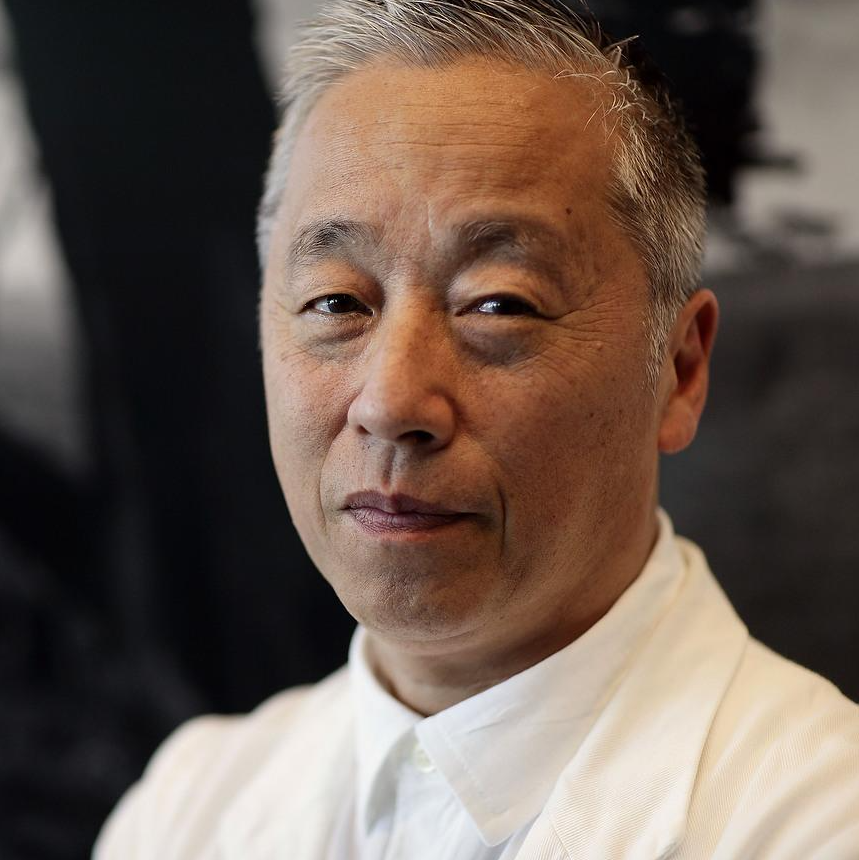
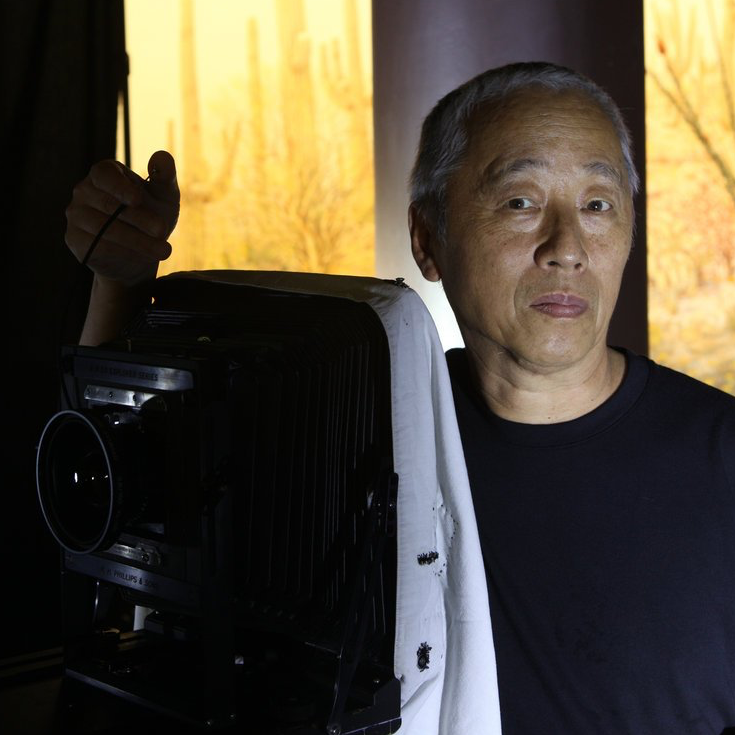
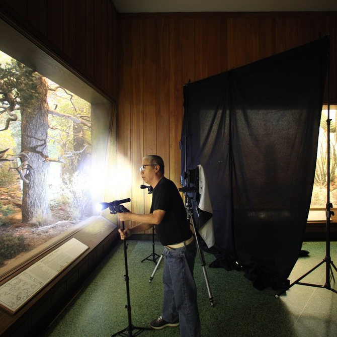

Hiroshi Sugimoto
- 23 februari 1948
- Tokyo, Japan
- Politicologie & Sociologie
- Bachelor of Fine Arts

Materiaal & Werkwijze
- Grootformaat camera
- Werkt duidelijk in series
- Lange sluitertijden
- Concept tijd belangrijk
- Fictie en werkelijkheid

Projecten
- 1976 - Dioramas
- 1978 - Theatres
- 1980 - Seascapes
- 1998 - Praise of Shadows
- 1999 - Portraits

Dioramas (1976)
"The stuffed animals positioned before painted backdrops looked utterly fake, yet
by taking a quick peek with one eye closed, all perspective vanished, and suddenly
they looked very real."
Theatres (1980)
"One night I thought of taking a photographic exposure of a film at a movie
theatre while the film was being projected. I imagined how it could be possible
to shoot an entire movie with my camera."
Seascapes (1980)
"Humans have changed the landscape so much, but images of the sea could be shared
with primordial people. I just project my imagination on to the viewer, even the
first human being."
Praise of Shadows (1998)
"Late one midsummer night, I threw open the windows, and invited in the night
breeze. Lighting a candle, I opened my camera lens. After several hours of
wavering in the breeze, the candle burned out."
Portraits (1999)
"I remade the royal portrait, substituting photography for painting. If this
photograph now appears lifelike to you, you should reconsider what it means to
be alive here and now."